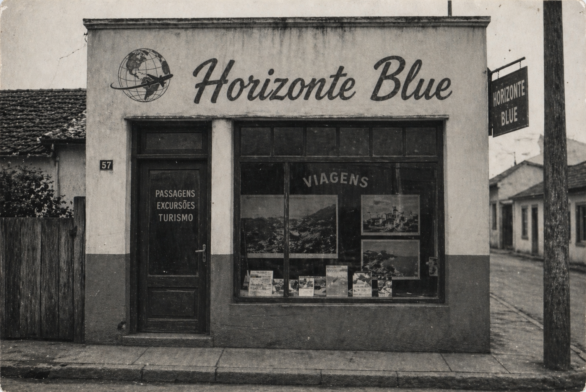

A Horizonte Blue foi fundada em 1982 pelo empresário Arthur Aoi, nascido no interior São Paulo. Sr. Arthur foi apaixonado por viagens desde pequeno. Sendo filho de imigrantes japoneses, as indas e vindas ao Japão eram frequentes para visitar a família. Mas foi apenas com 23 anos que ele decidiu criar sua própria agência na humilde cidade de Novo Horizonte, onde nasceu e cresceu.
Com uma visão empreendedora e um olhar atento às mudanças do mercado, Arthur Aoi apostou desde cedo na personalização do atendimento, algo ainda raro na época. Ele acreditava que viajar não era apenas deslocar-se, mas viver experiências transformadoras — e fez dessa filosofia o principal diferencial da Horizonte Blue. Durante as décadas de 1990 e 2000, a empresa expandiu suas operações para além do território nacional, estabelecendo parcerias estratégicas com companhias aéreas e redes hoteleiras internacionais.

Esse crescimento sólido permitiu à Horizonte Blue atender desde clientes em busca de viagens econômicas até roteiros exclusivos e de alto padrão. Mesmo com os avanços tecnológicos e a popularização das reservas online, a empresa soube se reinventar sem perder sua essência. Investiu em plataformas digitais, mas manteve o atendimento humano como prioridade, garantindo confiança e proximidade com seus clientes. Hoje, a Horizonte Blue não é apenas uma agência de viagens, mas um símbolo de tradição, inovação e paixão por explorar o mundo — valores que continuam sendo guiados pelo legado de seu fundador.